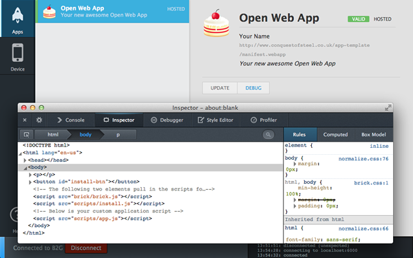
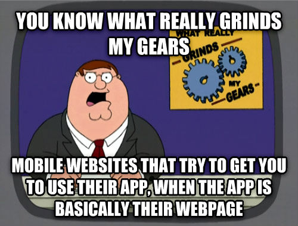

Firefox OS
where WebApps become Native
"Mobile & Embedded" @ GDG Firenze - 13 Febbraio 2014
Created by Luca Greco
Who am I?
Software Developer
@
ALCA Società Cooperativa
http://alcacoop.it
Mozilla Developers Community,
Code Contributor
on
Firefox OS Simulator
Firefox DevTools

Firefox OS
Platform
Gonk
- porting target for Gecko
- Lower Level OS Layer
- Linux Kernel + UserSpace Hardware Abstraction Layer
- common open-source projects: libusb, bluez, ...
- shared Android HAL: GPS, Camera, ...
Gecko
- Firefox WebEngine ported on Gonk
- Platform & Applications Runtime based on Web Technologies
- provides platform access to apps (e.g. networking and graphics stacks, javascript VM, ...)
- provides standard and new experimental WebAPIs (installable WebApps, WebActivities, Vibration, Battery, ...)
Gaia
- collection of system apps (e.g. system, homescreen, lockscreen, settings, ...) and pre-installed mobile apps (e.g. dialer, sms, contacts, email, browser, marketplace, ...)
- implemented using HTML, CSS and JS
- use Gecko is its interface to the underlying OS
Firefox OS
everything in the OS is OpenWeb Technologies and Standard Proposals:
Firefox OS
Developer Tools
Firefox Developer Tools
App Manager
Installed App and Permissions Table:
Remote DevTools

Firefox OS
Apps

Firefox OS Apps are
WebApps
Bookmark to homescreen

OpenWebApps:
WebApp + manifest.webapp
- application metadata
- install/upgrade/uninstall workflow
- request permissions
- new experimental features (e.g. WebActivities)
manifest.webapp
{
"name": "MyAppName",
"version": "1.7",
"launch_path": "/index.html",
"description": "...",
"developer": {
"name": "...",
"url": "..."
},
"locales": {
"en-US": {
"name": "...",
"description": "...",
},
},
"default_locale": "en-US",
"icons": {
"128": "/style/icons/Blank.png"
}
}
Application Types
Hosted App
- regular webapp security restrictions
- served from an HTTP Server
- 1 hosted app x origin
Packaged App
- no internet origin
- use a special app:// protocol
- generated (at install time) uuid as app domain
- packaged apps CAN be privileged
- all resources packaged into a zip archive
Firefox OS
Apps Permissions
and WebAPIs
arewemobileyet.com

WebAPI
Security Restrictions
Hosted Apps
- no privileged APIs
- no cross domain requests (but you can use CORS)
- same "webapp in a browser tab" constraints (mostly)
- ... but more relaxed storage limits (appcache, indexeddb, localstorage)
Security Restrictions
Packaged App:
all standard and experimental WebAPIs +
extended priviliged WebAPIs available
- cross domain requests (systemXHR)
- tcp sockets
- contacts
- device storage
- file handle
- browser
Security Restrictions
Priviliged and Certified Packaged App:
enforce a CSP (content security policy) by default:
- no remote scripts injection
- no inline scripts in html tags/attributes
- no javascript URIs
- eval is not allowed
ask for...
permissions
(if needed)
manifest.webapp permission fragment
...
"type": "privileged",
"permissions": {
"contacts": {
"description": "Required for ...",
"access": "readcreate"
},
"alarms": {
"description": "Required to ..."
}
}
...
WebAPI example
WebActivities
if (typeof MozActivity == "function") {
...
} else {
console.log("FALLBACK: call WebActivity" +
" 'pick image'");
return;
}
WebActivities
var pick = new MozActivity({
name: "pick",
data: {
type: ["image/png",
"image/jpeg"]
}
});
WebActivities
pick.onsuccess = function () {
var img = document.createElement("img");
img.src = window.URL.
createObjectURL(this.result.blob);
var viewer = document.
querySelector("#image-viewer");
viewer.appendChild(img);
};
pick.onerror = function () { ... };
Apps can define new WebActivities
...
"activities": {
"pick": {
"filters": {
"type": ["image/*", "image/jpeg"]
},
"disposition": "inline",
"returnValue": true,
"href": "/index.html#pick"
},
...